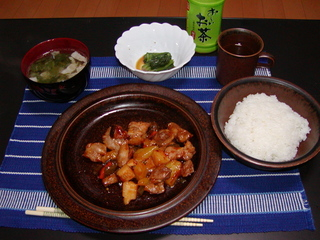
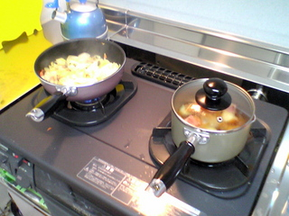

« 2004年09月 | メイン | 2004年11月 »
2004年10月29日
酢豚を作ろう！
今日は何を作ろうかなー、と同僚に相談していたらなぜか２人から酢豚を勧められた。
酢豚ってそんなに基本的な料理なんだろうか？なんだか難しそうだけど。まぁやってみよう！
今日は初めてみそ汁も作った。だしをとって味噌を混ぜるだけ、だよね？とりあえず本だしを使ってで手抜きをした。

酢豚とみそ汁（ほうれん草とベーコン）、ほうれん草のおひたし
{kind=link}
家に帰ってレシピを調べてみると、いろいろとある。
カレーや肉じゃがの作り方を調べてもだいたい一緒だけども酢豚はサイトによってレシピは結構ばらばらだ。
苺ジャム使うってのもある。
いったいどれに従って作れば良いかわからないけどこのサイトを参考にすることに。
・Bibisage
http://www.bibisage.com/recipe/040844.html
酒や酢など今まで使ったことのない調味料をいろいろ組み合わせるのでちょっと不安だ。
なにやら手順は複雑だけどもそれぞれ炒める、茹でる、片栗粉でトロみをつけるとか経験済みのプロセスの積み重ねだ。
レシピ通りやればちゃんとできた。
おいしい、うれしい、すばらしい
おいしいけどピーマンや人参の色がきれいに出なかった。なんかコツがあるんだろうか？
投稿者 yusuke : 22:54 | コメント (0) | トラックバック
blogと料理とソフトウェア
blogに書くことで興味を持ってくれた人から話しかけられる。
「今日はなにを作るの？」
こんな状況でカップラーメンなんて食べるわけにはいかない。良い刺激だ。
料理の経験がないとスーパーに行って食材をながめてもそれらが何に変身するのか全く想像つかない。
ふと思ったのはソフトウェアと料理はちょっと似ているということ。
ソフトウェアもアプリケーションの機能や外観をイメージするのは簡単だけれども、実際にコーディングとなると経験が必要となる。
オブジェクトの粒度感やデザインパターンを身につけることで実装のイメージが湧く。
料理の場合はどんな料理があるか知っていても炒め方、焼き方、茹で方、味付け方、盛りつけ方などのパターンがなければ調理のイメージはわかない。
どんどんパターンを覚えよう。
投稿者 yusuke : 21:33 | コメント (1) | トラックバック
2004年10月27日
肉じゃが完成
皿うどんの具が随分と早くできてしまった。こっちの火を一旦止めて肉じゃがをぐつぐつ煮込む。
煮込んでいたらコンロがピーピー鳴って火が消えた。どうやら水分が飛んで鍋が熱くなりすぎたらしい。さすがハイテクコンロだ！
汁はしっかりジャガイモに染みこんでて良い感じ。うまい！

肉じゃが、皿うどん、サラダ
投稿者 yusuke : 21:14 | コメント (6) | トラックバック
肉じゃがに挑戦
今日はジャガイモを食べる。ジャガイモの料理といえば肉じゃがだ！
ウチは洋食が多いためか肉じゃがが特別お袋の味、というわけではないけれども挑戦。

コンロを２つも使うなんて料理人！
{kind=link}
メインディッシュはちょっと簡単に長崎皿うどん。これは何度か作ったことがあるので楽チン。炒めて付属のタレの素(片栗粉&α)を入れるだけだ。
というわけでコンロを２つ使った。恥ずかしながらたぶん人生初。
肉じゃがの肉はとりあえず冷蔵庫にあるベーコンで。さてどんなのができあがるだろうか？
参考レシピ:一人暮らしの男の料理 肉じゃが
http://www.ne.jp/asahi/monkey/academy/recipe/nikujaga.htm
投稿者 yusuke : 20:50 | コメント (1) | トラックバック
2004年10月26日
完成！反省！
軽く炒めたら水を入れて煮込む。計算では水は400ccくらいのはずだが計量カップがない。コップ一杯200ccくらいだから2杯分くらい入れれば良いかな？
ほぼ初めてのカレー
{kind=link}
同僚にもらったガステーブルは点火と火力のスイッチが別になっているので弱火を演出するのが大変簡単！一番弱くしても火が消えない仕組みになっているのだ。すばらしい。Yakov & メグメグ ありがとう。
さて、できあがりは・・・少しスープっぽい！ジャガイモが煮くずれしかかってる！
母親の作るカレーの遺伝子が微妙にはいってます、なぜか。レーズンと茄子は入っていないけど。
あ、サラダがない！スプーンもない！福神漬けもない！
うぅーん、でもおいしい。次回は今回より水を少なめに(今回計ってないけどさ)、ジャガイモはチンせずやってみよう。
投稿者 yusuke : 22:16 | コメント (2) | トラックバック
小さくなるよね？小さくなるよね？
さて、材料を炒めるわけだがじっくり炒めてるうちに餓死してしまいそうなので電子レンジで軽く柔らかくしておこう。チンしとけばググっと調理時間が短縮できるってよく料理番組でみるもんね。
レンジにかけながらご飯を 3/4合といで電子ジャーに入れる。実家ではいつも圧力鍋でご飯を炊いていたので勝手に炊いてくれる電子ジャーはなんだか不思議。初めチョロチョロなかパッパ・・・・を勝手にやってくれるんだろうか？でもご飯の分量を計算するような量りはなさそうなので分量にかかわらず同じ火加減なのかな？分量に応じて火加減を調節したらもっとおいしく炊けそうな気がするけど、どうなんでしょう。
さてチンが終わったら炒めるわけだけどもちょっと鍋が小さい。ぎりぎり材料が入るくらいだけども吹きこぼれそう。
親にもらったドでかい圧力鍋もあるけど、ちょっとドでかすぎる。
「君たち火を通せば小さくなるよね？小さくなるよね？」と語りかけながら小さい鍋でやることに。
投稿者 yusuke : 22:12 | コメント (0) | トラックバック
ジャガイモは毒？
とりあえずバーモントカレーの甘口を買ってきてレシピを勉強。
分量はなんと１２皿分の分量が載っている。あぁ、ルーを全部使った場合ね。
とりあえず３皿分も作れれば良いのでだいたい1/4の分量で作れば良いかな？
まずはタマネギ、にんじん、ピーマンを適当に切る。
ジャガイモは皮をむいて・・・あれ？ジャガイモの芽って毒があるって小学生の時習わなかったっけ？皮むき器にはなんだか芽をもぎりとるのに便利そうなループがあるし。
でもジャガイモで死んだ人なんて聞いたことがない。・・・Googleで調べてみると毒性は弱くて大人ならまず大丈夫だけど子供だと中毒症状を起こすことも、またごくまれに死亡することもあるそうだ。
でも発芽していない(青くなっていない)芽なら大丈夫らしいので無視。
投稿者 yusuke : 22:08 | コメント (0) | トラックバック
料理をするぞ！カレーを作るぞ！
一人暮らしを始めたばかりで食べ物に困っている。箱入り息子で料理をしたことがないから。なにしろ親がいないときはたいていカップラーメン、がんばってサッポロ一番という駄目っぷり。
少しずつ料理を覚えよう！
今日は(たぶん)基本のカレーを作ることにっ。
多くの母親がそうであるのと同じく、またはそれ以上にウチの母は料理がうまい。でも不思議なことにカレーにかけてはここだけの話最近までイマイチだった。いつもトロみの少ないスープ状で、なぜかじゃがいもが入っていない。
父と散々「ジャガイモは必須！」と５年ほど訴え続けたら最近ようやく入るようになったくらい。
#でも入れるタイミングが早いのか溶け出して形をとどめていないこともしばしば
というわけでカレーは基本にして最大の挑戦でもある。
投稿者 yusuke : 21:45 | コメント (1) | トラックバック
water leak
朝イチで区役所に行ったら定時にちょっと間に合わそうだったので今日は午前休に。
休んだついでに洗面所で水が漏っているのを不動産へ通報、すぐに業者を呼ぶけど今日は家にいるか？、とのこと。
たまにはゆったり、ということで今日は１日休みに。どうせ使いきらない年休はちょくちょく消費しないと。
水漏れ現場
不動産へ電話をしたのは10:00ごろだけど昼過ぎになっても業者から連絡がない。もう一度不動産に電話してプッシュする。
ようやく13:30ごろ工務店？から電話が入る。症状を話すとたぶん施工に問題はなく化粧台自体の問題だと思われるので化粧台のメーカーに連絡するとのこと。たらい回しだ。
14:30ごろになると化粧台のメーカーから電話があった、様子を見に行くけど今週在宅している日はいつか？とか呑気なことを言う。「今日だよ、今日！そのために休んだんだから！！！」
「それでは(午後)３時から６時くらいの間に伺います」
なんて曖昧な・・・弥生時代の方ですか？
16時くらいにようやくメーカーの方が来てちょっと調べたところ、かなり珍しいところから漏れているので、化粧台自体に問題はなく蛇口自体の不良の可能性がある、とのこと。たらい回しだ。
蛇口のメーカーに見てもらうが今週在宅している日はいつか？とか呑気なことを言う。」今日だよ、今日！そのために休んだんだから！！！」
最後に蛇口のメーカーの方が18時に到着。ちょっと調べたところ斜めにねじ込まれている部品があって水がへんなところを伝っていたらしい。作業自体はほんの30秒くらいで直ってしまった。
ごくごく簡単なちょっとした問題なのにたらい回しにされて解決に大変時間がかかってしまった。
業種は違えどカスタマサポートをする者として身にしみた。
洗面器でもソフトウェアでもリークに関連する障害は切りわけに時間がかかる。WebLogic ならJDBCコネクションのリーク箇所は自動的に検出してくれるけど、水の場合はどうなんだろう？
ガス漏れを検出してくれるのは知っているけども。粘度が違うだけで基本的にガス漏れのシステムを応用できるよね？もちろん漏れている箇所を検出するのは無理だと思うけど。
調べたところ日本では業務用のがぽつぽつある程度で、なかなか家庭向けのは見あたらない。
海外の製品を調べるとWaterCopなんかは家庭用っぽい。
ガスと同じく水漏れを検出すると自動的に元栓を閉めてくれる模様。
ほかにもいくつかあるみたい。やっぱ家が広いと気づくのが遅れて大問題になるから製品化されているんだろうか。
投稿者 yusuke : 18:47 | コメント (0) | トラックバック
サーバ復活
自宅サーバを立ててるとサーバが落ちたときとても心臓に悪い。
たぶん一番アクセスしているのは自分なのに:p
投稿者 yusuke : 00:00 | コメント (1) | トラックバック
2004年10月20日
unnecessary
って単語は綴りが難しい。
いつも間違える。
投稿者 yusuke : 11:35 | コメント (1) | トラックバック
2004年10月18日
日本では
携帯電話をいじっているホームレスを見かけた。
ハムスターを飼っているホームレスも見たことがある。
裕福な国です。
投稿者 yusuke : 10:56 | コメント (3) | トラックバック
2004年10月05日
日本じゃない
アメリカにはウォークマンで音楽を聴きながら、さらにたばこを吸いながら小銭をせびるホームレスがいる。金あるんじゃないの？
投稿者 yusuke : 16:57 | コメント (4) | トラックバック
2004年10月02日
日本じゃない
アメリカ人はアバウト。
BART(Bay Area Rapid Transport)の時刻をインターネットで検索できる。
たとえば到着時間を 10:30 と指定すると「10:30前後」に到着する便が表示される。
投稿者 yusuke : 16:51 | コメント (0) | トラックバック
日本じゃない
ポテトチップスは袋を開けて一週間してもパリパリだ。
でもアメリカ人はものの５分くらいで食べ終えてしまうし昼飯にも食べる。
投稿者 yusuke : 15:21 | コメント (0) | トラックバック
Proposition 68
というのが話題になっている。
Proposition というのは住民で投票して決める議案のことらしく、今回はカリフォルニア州のカジノから25%の税金を徴収しようという話。
それぞれの利権を持った人たちがテレビCMを出していて、賛成に投票しよう！賛成歯にだまされるな、Noと言うんだ！と主要している。
経営者だけが儲かって渋滞などで迷惑している周辺の住民や自治体に還元されないのはおかしい。儲けまくってるんだろうから25%くらいケチケチしなさんな。
そもそもカジノ運営が課税対象になっていないのはびっくりだけども、住民投票に対して CM を打つという姿勢にもびっくりだ。
前まではカジノはネバダ州ばかりにあるものと思っていたけどもカリフォルニア州にも結構カジノがあるみたい。日本人はあまりいきませんね(?)。
投稿者 yusuke : 08:46 | コメント (0) | トラックバック
Hog Island Oyster
に行った。
http://www.hogislandoyster.com/
いわゆるオイスターバー？で、新鮮な牡蠣を目の前で向いて大量に食べられる。
今回２回目だけどもやはりうまい。日本で牡蠣を食べると１コ５００円くらいしてしまうような気がするけどもサンフランシスコでは＄１〜２くらいから食べられる。
地元のワインと共にダニーと二人で４４コ食べてしまった。
最高！
投稿者 yusuke : 08:34 | コメント (0) | トラックバック
2004年10月01日
日本じゃない
サンフランシスコでは消防車、パトカーのサイレンが毎日５回くらい聞こえる。
でも救急車は有料(たしか$300くらい？)なためかあまりない。
日本では１日２回でも見ればちょっと珍しいのに。